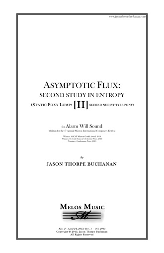

VIEW SCORE:
- 
ABOUT THE WORK:
Asymptotic Flux: Second Study in Entropy (2013)
Instrumentation: 1.1.2.1-1.1.1.0-2 Perc, Pno, 1.1.1.1.1, alto flute, oboe, bass clarinet, bassoon, horn, trumpet, trombone, 2 percussionists, piano, 2 violins, viola, cello, and contrabass
Dedication: Alarm Will Sound
Commission & Awards:
Commissioned by the Mizzou International Composers Festival
Winner, 2014 ASCAP Morton Gould Award
Winner, Howard Hanson Orchestral Prize, 2014
Nominee, Gaudeamus Prize, 2015
World Premiere: Columbia, MO - Alarm Will Sound - July 27, 2013
European Premiere: Gaudeamus Muziekweek, Utrecht, Netherlands - Insomnio Ensemble - September 13, 2015
Purchasing information: Digital Score PDF: $19.95, Score and Parts (RENTAL ONLY): $149.95
Contact: jasontbuchanan[at]gmail.com
PROGRAM NOTES:
Asymptotic Flux: Second Study in Entropy (Static Foxy Lump: [II] Second Nudist Tyre Pony) was written between February and April of 2013 for Alarm Will Sound as the second work in a cycle utilizing shared musical objects and compositional devices. The first, for amplified bass clarinet, violin, viola, and cello, was composed over a three-month period while traveling and hitchhiking throughout Europe, surrounding time spent in Paris and Darmstadt. The experience of frantically seeking opportunities to compose while on the move proved challenging, mostly due to the awkward, impromptu workspaces available to me such as cafes, restaurants, hostels, and the apartments of my various hosts. These were typically quite busy, noisy, and chaotic spaces, influencing the character of the music, as well as the title.
Asymptotic Flux describes an arguably conceptual device: the low E-flat that simultaneously pervades the work and is non-existent. In the quartet, I imagined that the ensemble is always reaching towards this E-flat as a point of centricity, but never quite arriving, analogous to an asymptote as it approaches infinity. In this Second Study, the low E-flat is finally provided by a contrabass subharmonic that both initiates and concludes the work, scarcely audible as a definite pitch, completely unstable, and on the lower threshold of human hearing. The parenthetical subtitle, an anagram of the title proper, alludes to the structural design of the work, borrowing musical snapshots from the quartet while fragmenting and re-contextualizing them throughout stages proportionally related to the 19.6 Hz E-flat in both temporal and harmonic centricity.
Originally, I had set out to explore the timbral possibilities of the bass clarinet, utilizing a variety of techniques to produce rich, complex soundscapes and microtonal sonorities that would provide germinal material for the work while unifying the ensemble. This second work is an extension of that same process of exploration. In addition to spectral analysis of bass clarinet multiphonics in various states, additional pitch content is generated through an acoustic analogue to a process known in electronic music as “single-sideband modulation,” resulting in a series of combination tones with intervals that grow exponentially (a shape inverse to that of the harmonic series). Many instrumental techniques in this work are employed explicitly to destabilize or distort the timbral qualities of each instrument; the use of vocalizations, scratch tones, and other techniques color the sound to modulate or destabilize the written pitch material, leaving it quite disfigured.
The last element regarding organization of pitch material revolves around the scordatura tuning of the cello to the 3rd, 5th, 7th, and 11th partials of a virtual low E-flat fundamental (19.6 Hz, slightly sharp), which is now extended to the contrabass by halving the 3rd and 7th partials while maintaining the same open G as the cello. This allows the execution of unique sonorities very rapidly and with a great deal of precision through the use of natural harmonics. These three verticality types are often superimposed upon one another, with resultant voicings sometimes similar to an “E-type” symmetrical hexachord possessing interval content that I’ve become partial to (no pun intended).
Entropy can be described as the “measure of the disorder or randomness in a closed system,” the “loss of information in a transmitted message,” the “tendency for all matter and energy in the universe to evolve toward a state of inert uniformity,” or the “inevitable and steady deterioration of a system or society” – taking poetic liberties in reducing the thermodynamic property of “entropy” to simply a unit of measurement for chaos, one might say that this work conveys a state of high entropy in music, thus reflecting the compositional process, the result of the technical demands made on the performers, as well as my state of mind throughout the creation of these works.
Performances of Asymptotic Flux: Second Study in Entropy

Gaudeamus Muziekweek
, Utrecht, Netherlands
Gaudeamus Muziekweek
, Utrecht, Netherlands

, Mizzou International Composers Festival
Columbia, MO